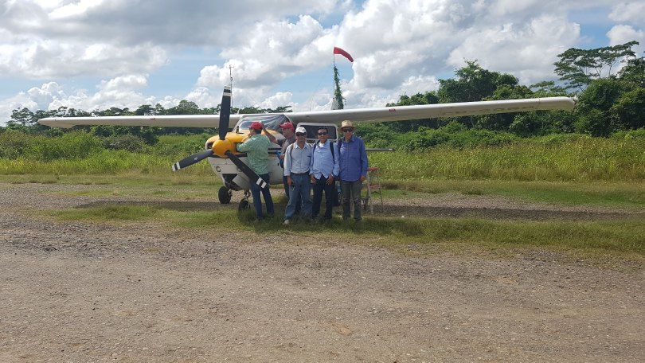
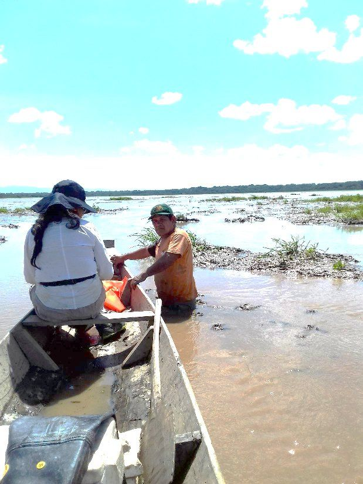
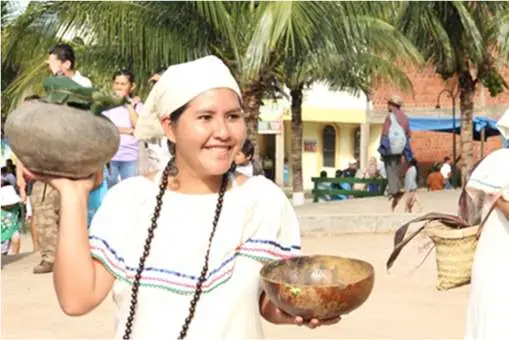
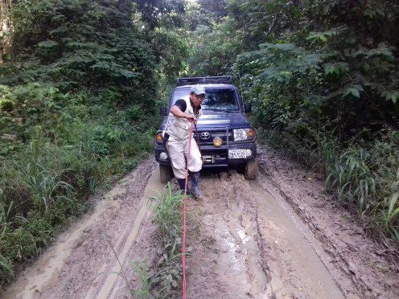
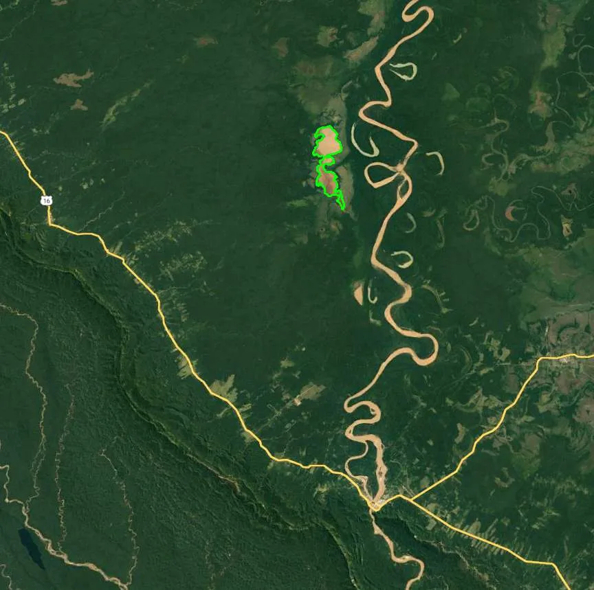

Planifica tu ruta
Cómo llegar al Lago Moa
Un destino remoto y auténtico: se llega por tierra, río o aire. Coordinamos el tramo final contigo desde Rurrenabaque o San Buenaventura.

La Paz → Rurrenabaque
Vuelo comercial corto, o por carretera vía Caranavi – Yucumo. Desde La Paz hasta el lago son casi 500 km.

San Buenaventura
Frente a Rurrenabaque, al otro lado del río Beni. Punto de recepción y de inicio de los paquetes.

Tumupasa
Principal comunidad tacana, por carretera. Desde aquí el lago está a 30 km en línea recta.

Lago Moa
Por camino de acceso en 4x4, o 65 km navegando por el río Beni.
El lago en el mapa
Lago Moa, Tumupasa y San Buenaventura sobre el río Beni.
- Dónde
- TCO TacanaMunicipio de San Buenaventura, provincia Iturralde, La Paz
- Superficie del lago
- 16 km²El segundo lago más grande de La Paz
- Cuenca
- 800 km²
- Desde Tumupasa
- 30 km en línea recta65 km por el río Beni
- Desde La Paz
- Casi 500 km
- Vecino
- Parque Nacional Madidi
